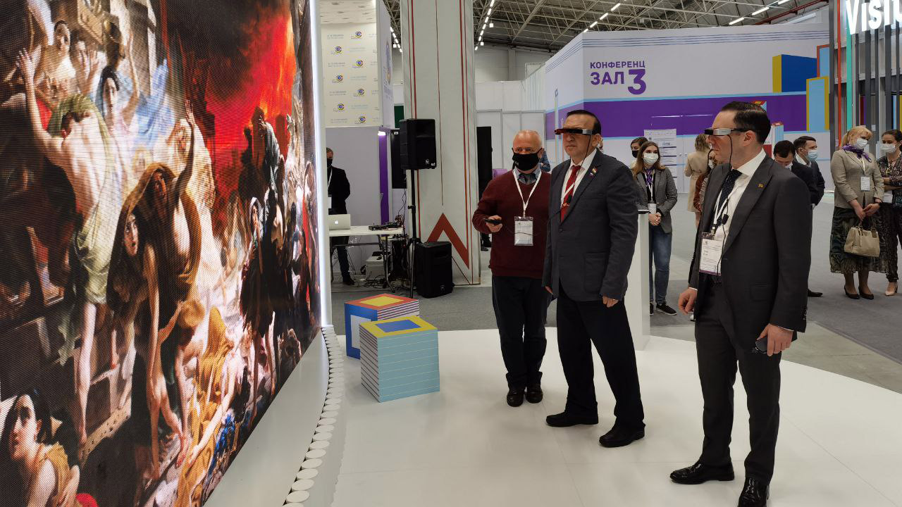
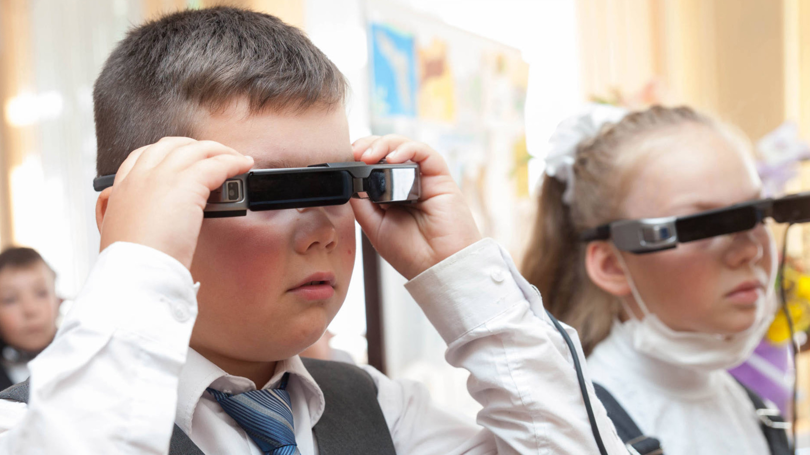

Russian Museum, St. Petersburg, Russia
company: Media Minds / Virtual Russian Museum
Role: Art Director
The AR experience was commissioned specifically for the anniversary of Bryullov’s birthday, and later was intended to become the foundation of an educational course “Art & Technology” at the museum’s school.
The Russian Museum wanted to reveal the depth of Karl Bryullov’s masterpiece The Last Day of Pompeii and engage visitors with the painting in a modern, interactive way.
We created an augmented reality application for Epson Moverio smart glasses that allowed visitors to explore the painting beyond its surface. Standing in front of the canvas, users could access interactive layers: preparatory sketches, compositional changes, highlighted characters, painting techniques, and guided narration.
The AR content was synchronized with the visitor’s position, blending digital storytelling with direct physical presence in front of the original artwork.
After the exhibition, the project was adopted as a learning tool in the new educational initiative “Art & Technology,” where students used the application as a reference to develop their own AR experiences.
Russian Museum
General director: Vladimir Gusev
Curator of the project: "Virtual Russian Museum" service
Head of service : Maria Gladkikh
Scientific consultants: Boris Stolyarov, Maria Rudenskaya, Sergei Sirro
MediaMinds
Project manager: Anton Saraev
Art-director: Alex Parshin
Content manager: Oksana Balandina
3D-modeling: Anastasia Kamenko, Sergey Shipov
Programmer: Jasur Sadekov
Illustrator: Nadezhda
2D-graphics: Oksana Kuzmina
Sound design: Dmitry Vasiliev
Voiceover: Stanislav Kontsevich
Supported by
Ministry of Science and Higher Education of the Russian Federation
Ministry of Culture of the Russian Federation
AFK Sistema
Service “Virtual Russian Museum”